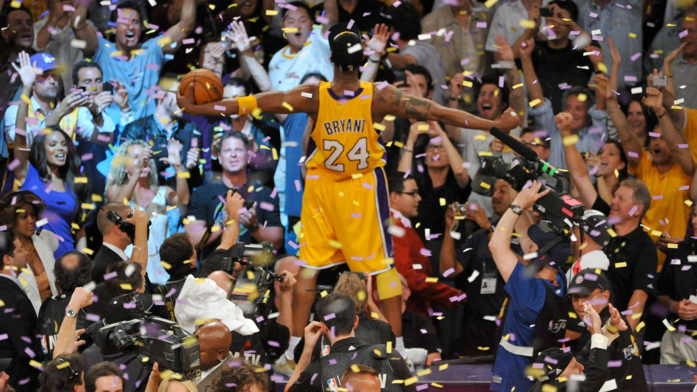

Kobe Bryant

click here for more info
Kobe Bryant celebrating his fifth NBA championship!
TIMELINE
- 1996 – Bryant finishes his high school career as the all-time leading scorer in the history of southeastern Pennsylvania basketball. He leads the Lower Merion Aces to a record of 31-3 and the Class-AAAA state championship. USA Today names him the National High School Player of the Year and he wins the Naismith Player of the Year.
- 1996-1997 – Bryant becomes the youngest player in NBA history as he begins his pro career at 18 years, 2 months and 11 days. He is named to the NBA All-Rookie second team after averaging 7.6 points in 15.5 minutes per game off the bench.
- February 1997 – He wins the All-Star Weekend slam dunk competition, but he does not play in the All-Star Game.